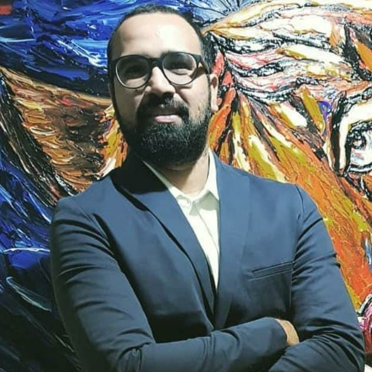

Kunal Ashok Rukade

Email:- rukade.kunal@gmail.com
Contact Number:- 07506649688
Summary
I want to be innovative, forward-thinking professional to be an integral part of a
competitive work environment.This would help me to grow both on the intellectual &
personal front. I would like to be part of a core team to keep myself updated in the
coming new trends and technologies so that my utility can contribute to the growth of
the organization and eventually enhance my skills.
Education
MIM (Masters in Information Management), University of Mumbai
July 2016 - May 2019
BE (Bachelors in Electronis and Telecommunication Engineering), University of Mumbai
July 2009 - May 2012
Diploma in Engineering (Electronis and Telecommunication), MSBTE
July 2006 - May 2009
Employment History
Cloud Contact Center Transformation Consultant at Accenture, London
November 2021 — Present
-
Experienced in transforming legacy contact centers into AWS cloud based contact
centers.
-
Worked as third party integration technical lead in Amazon connect contact center
delivery for one of the largest client.
-
Extensive working knowledge of Amazon connect, Agent desktops, Payment solutions,
Cisco, Avaya Voice platforms and WFM solutions.
-
Experienced in designing, developing Amazon connect contact center using resources
like Amazon connect, Lex, Lambda, Dynamo DB etc ensuring security policies are
compliant
-
Experienced in Contact Center deployment with integration of Omningage, Sequence
shift and Verint
-
Lead end-to-end medium to large project delivery for Amazon connect maintaining an
excellent customer experience across Telco, utilities and financial sectors
-
Working knowledge of Systems Integration, LAN communications, Cloud solutions, CRM
and AWS Architectures.
-
Collaborated with stakeholders to define project scope, timeline, budget and
deliverables.
-
Analyzed customer environments to identify areas for improvement and optimization of
existing systems.
-
Delivered presentations to customers outlining proposed solutions and their associated
benefits.
-
Provided technical guidance to dev, test and training teams.
-
Worked on RFP's and POC's based on client requirements and planned demos.
Senior Consultant at Infosys Ltd, Stockholm
March 2018 - November 2021
-
Experienced in Transformation of On-premise Contact center solution to Cloud based
solutions on AWS, Genesys, Avaya and Nice.
-
Experienced in working on/Implementing solutions with different vendors like AWS,
Cisco, Avaya, Genesys Nice and Verint
-
Worked on RFP's and POC's based on client requirements to provide them demo for their
Contact center call flows/services
-
Experienced in Providing designed Solutions on AWS architecture for various solutions
for customers on services like EC2, Amazon connect, S3 etc
Senior Project Engineer at Wipro Ltd, Mumbai
October 2016 — March 2018
-
Worked on Cisco, Avaya, Nice and Verint Product line to support Customer's
Infrastructure.
Voice Network Engineer at Reliance Industries Ltd, Mumbai
December 2015 — October 2016
-
Worked on Voice Infrastructure for Reliance Industries group of companies as a Voice
Engineer. (Cisco and Avaya)
Technical Support Engineer at Innovatia India Knowledge Pvt Ltd, Bangalore
December 2013 — December 2015
-
Provided technical solutions to premium Customer of Avaya INC in North American
region.
Trainee Engineer at Blooms System, Mumbai
September 2012 — September 2013
-
Worked as a trainee to support L1 issue's raised by HP User's for Avaya
Skills
-
Amazon connect solution Architecture ★★★★☆
-
Contact Center Cloud Migration ★★★★☆
-
Amazon AWS ★★★★☆
-
Design IVR Payment Solution ★★★★☆
-
Integration of Agent Desktop solution ★★★★☆
-
Salesforce Service Cloud Voice ★★★☆☆
-
Third Party integrations like Verint, Sequence shift etc ★★★★☆
Courses
Product Management Certification Program, Upgrad - Duke University
May 2021 — May 2021
Certifications
AWS certifed Solution Architect - Professional
AWS Certified Solution Architect Associate
Google Cloud Certified Associate Engineer
CCNA RNS
CCNA Voice